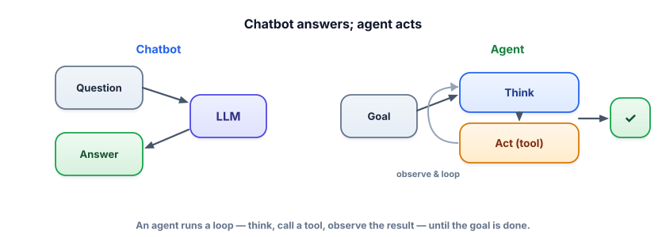

From chatbot to agent
A chatbot answers from what it already knows, in one reply.
An agent works toward a goal. It can use tools, such as a search, a calculator or your database.
It looks at what each tool returns and decides the next step, again and again, until the job is done.
That repeating cycle is called the agent loop.
More freedom means more power and more ways to fail, so give an agent only as much as the task needs.
A chatbot is a librarian at a desk: you ask, they answer from what they already know, and that's it. An agent is the same librarian with a phone, a calculator and permission to walk into the stacks: they can go check, come back, and check again until your question is answered.
| In the picture | In the real system |
|---|---|
| The librarian at the desk | A plain LLM: answers from the prompt and its training |
| The phone and the calculator | Tools: functions the model can ask your code to run |
| Walking to the stacks and back | One loop step: act, then observe the result |
| Checking again until it's answered | Repeating the loop toward the goal |
| Someone telling them to stop | Your code's guards: step limits, budgets |
Where the picture breaks. A real librarian knows when they are lost; an LLM agent will keep walking the stacks happily unless your code tells it to stop.
Going deeper
A chatbot answers what you ask. An agent accomplishes a goal — it can look things up, run calculations, call APIs, and take multiple steps, deciding what to do next based on what it sees. This is how LLMs move from “talks well” to “gets things done.”
Why agents exist
You already know the LLM’s limits: it can’t fetch fresh data, do exact math, or affect the outside world — it just predicts text. RAG (Track 3) fixed one limit by feeding it knowledge. Agents fix the rest by giving the model tools it can choose to use, and a loop in which it acts, observes the result, and decides what to do next. “What’s the weather and should I bring an umbrella?” becomes: call a weather API, read the result, then answer. “Summarize the latest sales and email it to my team” becomes: query the database, summarize, send the email — several actions, chosen and sequenced by the model.

An agent is an LLM placed in a loop where it can call tools (functions the model can invoke — a calculator, a search API, your database) and use their results to decide its next step. The repeating cycle of decide an action → run it → observe the result → decide again is the agent loop. Autonomy is how much the agent decides on its own versus following a fixed script — a spectrum, not a switch.
The autonomy spectrum
“Agent” isn’t binary. It’s a dial, and you should turn it only as far as the task needs:
| Level | What it does | Example |
|---|---|---|
| Plain LLM | Answers from the prompt only | “Rewrite this email.” |
| Tool-augmented | Can call one or more tools when needed | “What’s 18% of this invoice?” → calculator |
| Agent loop | Chooses tools over multiple steps toward a goal | “Research X and draft a brief.” |
| Autonomous / multi-agent | Plans, delegates, and runs many steps with little supervision | “Triage these 50 tickets and respond.” |
Every step of autonomy you add multiplies both capability and failure surface: more steps to go wrong, more tools to misuse, more cost to run away. The engineering goal is the least autonomy that solves the task. If a fixed pipeline (RAG → format) works, don’t build a free-roaming agent. We’ll spend Lesson 4.8 on guarding the autonomy you do use.
The smallest real agent: the model decides whether to use a calculator tool, we run it, and feed the result back. This previews tool calling (4.2) and the loop (4.3).
import json, ollama
def ask(prompt, system=None, model="qwen2.5:7b"): # one chat call; returns the reply text
msgs = ([{"role": "system", "content": system}] if system else []) + [{"role": "user", "content": prompt}]
return ollama.chat(model=model, messages=msgs)["message"]["content"]
def calculator(expression):
return str(eval(expression, {"__builtins__": {}})) # toy tool (never eval untrusted input in prod!)
def agent(question):
prompt = f"""You can use a calculator. Reply with JSON:
either {{"tool":"calculator","expression":"..."}} to compute,
or {{"answer":"..."}} if you already know.
Question: {question}"""
step = json.loads(ollama.chat(model="qwen2.5:7b",
messages=[{"role":"user","content":prompt}], format="json")["message"]["content"])
if "tool" in step: # the model chose to act
result = calculator(step["expression"]) # we run the tool
return ask(f"The calculator returned {result}. Answer the question: {question}") # feed result back
return step["answer"]
print(agent("What is 23.5% of 1840?")) # model → calculator → "432.4"Notice the shape: the model decides to act (structured output from Track 2.4), your code runs the action, and the result goes back into the model. That decide-act-observe shape is the seed of every agent — the next lessons make each part robust.
Assumptions (stated, not measured): a SaaS company gets 40,000 tickets a day. Each needs a category and a draft reply. We price with claude-sonnet-5-5 at $2 per million input tokens and $10 per million output tokens (Claude models overview).
- Fixed pipeline. One call: 3,000 input tokens (ticket + retrieved help articles) and 300 output tokens. Cost per ticket = 3,000 x $2/1M + 300 x $10/1M = $0.006 + $0.003 = $0.009. Per day: 40,000 x $0.009 = $360.
- Agent loop. Same ticket, but the model chooses tools over an average of 6 steps. Every step resends the whole conversation, and each step adds about 800 tokens (tool result + the model's last turn). Input over 6 steps = 6 x 3,000 + 800 x (0+1+2+3+4+5) = 18,000 + 12,000 = 30,000 tokens. Output = 6 x 200 = 1,200 tokens.
- Agent cost per ticket = 30,000 x $2/1M + 1,200 x $10/1M = $0.060 + $0.012 = $0.072. Per day: $2,880, 8x the pipeline.
- Latency follows the same shape: 6 sequential model calls instead of 1.
- The decision: if 90% of tickets are password resets and refund-status lookups, route those through the pipeline and send only the open-ended 10% to the agent. Blended cost = 36,000 x $0.009 + 4,000 x $0.072 = $324 + $288 = $612/day.
That is the least-autonomy rule in money: the agent is worth it only where the path is genuinely unknown in advance.
- A chatbot answers; an agent accomplishes goals by calling tools in a loop.
- An agent = LLM + tools + a decide-act-observe loop (+ optionally memory and planning).
- Autonomy is a spectrum: plain LLM → tool-augmented → agent loop → autonomous/multi-agent.
- Use the least autonomy that solves the task — more autonomy means more power and more risk.
- The core shape: the model decides an action, your code executes it, the result is fed back.
Your task: “Given an invoice amount, return the total with 8% tax as a number.” It’s the same calculation every time. Should you build an agent?
What turns a chatbot into an agent?
Which task most clearly needs an agent loop rather than a fixed pipeline?
1. Classify each as plain LLM / tool-augmented / agent loop: (a) “translate this paragraph,” (b) “what’s the current Bitcoin price?”, (c) “research three competitors and write a comparison.”
2. In the example, why must your code run the calculator rather than the model computing it directly?
3. Give a task where a fixed pipeline beats an agent, and one where an agent is genuinely necessary.
▸ Show solutions & reasoning
1. (a) plain LLM — pure text transformation, no external info. (b) tool-augmented — needs one live data fetch (a price API), then answer. (c) agent loop — multiple steps (search each competitor, gather, compare, write), with the model deciding what to look up next. Match the machinery to the number and openness of steps.
2. Because the model only predicts text — it doesn’t actually execute anything, and its “mental math” is unreliable (Track 1). Routing the computation to real code gives an exact, trustworthy result, then the model explains it. The division of labor — model decides, code executes — is what makes agents reliable.
3. Fixed pipeline wins: “summarize this document and return JSON” — known steps, no decisions, so a RAG-or-prompt pipeline is simpler and more reliable. Agent necessary: “debug why this failing test breaks and propose a fix” — the steps depend on what each tool reveals (read logs → inspect code → run test → adjust), which can’t be scripted in advance. Agents earn their complexity when the path is unknown until you’re walking it.
It’s tempting to think a better model makes a better agent, and capability does matter. But in practice, reliable agents are won and lost in the scaffolding around the model: the quality of the tool definitions, how cleanly results are fed back, how errors are handled, how the loop is bounded, and how state is tracked across steps. A modest model with excellent tools, tight prompts, and solid guards beats a frontier model wired up carelessly. The model is the reasoner; you build the environment it reasons in.
This reframes the whole track. “Building an agent” is really building a small, well-instrumented system: define tools the model can’t misuse, design a loop that can’t run away, give it the memory it needs and no more, and verify what it does. The model’s job is to choose the next action; your job is to make every possible action safe, observable, and recoverable. Keep that division in mind and agents stop feeling like magic and start feeling like software — which is exactly what makes them shippable.
labs/04_agent_tools.pyFree and offline once set up: Ollama with qwen2.5:7b, plus the packages in labs/README.md. From the course folder:
python labs/04_agent_tools.pyWhat to look for: Read the trace for each scenario: a lookup takes 2 model calls (one tool call, one answer), and the scripted section shows a stuck model hitting the step budget. Add a plain rewrite question to SCENARIOS and watch it finish in 1 call with no tool. That gap in calls (and tokens) is the autonomy cost this lesson is about.
Small samples: these labs use 5 to 20 cases so they run in minutes on a laptop. Where they report a rate, they print n and a 95% Wilson interval. Read them as a demonstration of the mechanism, not as a measured rate for your system; for that you need hundreds of cases and several seeds.
▸ Recorded output (our run, 2026-11-03, qwen2.5:7b on a laptop GPU)
Second scripted model: it calls issue_refund for Rs 1500 (over the Rs 1000 auto-approve line), then answers.
step 1: issue_refund({'order_id': 'ORD-55120', 'amount_rs': 1500}) -> {'status': 'pending_human_approval', 'order_id': 'ORD-55120', 'amount_rs': 1500}
step 2: FINAL -> Your refund request has been sent for approval.
Look: the code returned pending_human_approval and the audit log records NEEDS_HUMAN: money did not move.
(The claim checker above is a crude regex: it can flag a polite 'shall I proceed?' as a promise. Read the
flagged lines yourself; in production you compare structured tool results, not text patterns.)
Audit log (what actually moved money)
('BLOCKED', 'ORD-55120', 25000)
('NEEDS_HUMAN', 'ORD-55120', 1500)
unbacked claims detected: 1 ignored refund requests: 1
Look: the Rs 25000 request was blocked by code, whatever the model was persuaded to try.
And check every FINAL line against the tool results: a fluent agent can promise an action it never
took, or add numbers no tool returned (e.g. a refund timeline). Verify claims against the audit log.
Prompts guide the model; only code enforces policy.Your numbers will differ a little run to run. Full log: labs/outputs. Source: labs/04_agent_tools.py.
Warm-up. A fixed pipeline costs $0.009 per request. An agent averages 5 steps, starting at 2,500 input tokens and adding 600 tokens per step, with 150 output tokens per step. At $2/M input and $10/M output, what does the agent cost per request?
▸ Solution
Input = 5 x 2,500 + 600 x (0+1+2+3+4) = 12,500 + 6,000 = 18,500 tokens, so $0.037. Output = 5 x 150 = 750 tokens, so $0.0075. Total about $0.0445, roughly 5x the pipeline. The term that grows fastest is the resent history, which is why step count matters more than output length.
Transfer. Your product manager wants an 'AI agent' that turns a sales call transcript into a CRM update with 6 fixed fields. Argue for the right level on the autonomy spectrum and sketch the design.
▸ Solution
This is a fixed extraction: same input type, same 6 fields, one write. Use structured output (schema-constrained JSON, Track 2) to extract the fields, validate them in code, and write to the CRM with ordinary code. No loop. Add a single human review step before the write if the CRM is a system of record. Reserve an agent for follow-ups like 'research this prospect's company', where the steps depend on what is found.
Stretch. Design a router that decides, per request, whether to use the cheap pipeline or the agent. What signal do you route on, and how do you know the router itself is not losing quality?
▸ Solution
Route on a cheap classifier (a small model or rules) that predicts 'single-step answerable' from the request and the retrieval score: high-confidence FAQ matches go to the pipeline, everything else to the agent. Measure it with a labelled set: for requests routed to the pipeline, compare answer quality against what the agent would have produced (offline replay). Track the share of pipeline answers that users escalate. If escalations rise, lower the confidence threshold. The router is a model, so it needs its own eval and a fallback (when unsure, send to the agent).
Junior What is the difference between an LLM workflow and an agent?
▸ Model answer
A workflow runs the model through code paths I wrote in advance: retrieve, then summarise, then format. An agent lets the model decide the next step at run time, picking tools and looping until it thinks it is done. Anthropic's 'Building effective agents' post draws the same line. Workflows are more predictable, cheaper and easier to test. Agents handle tasks where the steps cannot be known up front, like debugging or open research. I start with a workflow and only move to an agent when the task really needs the model to choose its own path.
Mid Your team built an agent for a task and it works, but it costs 8x the old pipeline. How do you decide whether to keep it?
▸ Model answer
I would split traffic by request type and measure quality and cost per type, not on average. Usually most requests are simple and the agent adds nothing there, so I route those to the pipeline and keep the agent for the hard tail. I would look at the trace data: how many steps each request type takes, and how often the agent's extra steps changed the final answer. If the agent's win is concentrated in 10-20% of requests, a router gets most of the quality at a fraction of the cost. I would also check that the pipeline's failures are not just pushed into a different place, like more escalations to humans.
Senior How would you explain to leadership why 'make everything an agent' is risky, with numbers?
▸ Model answer
Three numbers. Cost: each agent step resends the growing conversation, so a 6-step agent can cost 8x a single call, and Anthropic reports its agents use about 4x the tokens of chat. Reliability: if each step is 98% reliable, a 10-step run is about 0.98^10 = 82% reliable, so long chains fail more often than single calls. Risk surface: every tool the agent can call is an action someone can steer through prompt injection. Then the proposal: a portfolio. Fixed workflows for the known, high-volume paths, agents for the open-ended tail, and a router between them, with evals and cost dashboards for both.
The foundation of every agent is the ability for the model to call a function reliably. Let’s make that precise and robust. Next: tool / function calling.
In one line: A chatbot talks once; an agent loops through tools until the job is done.